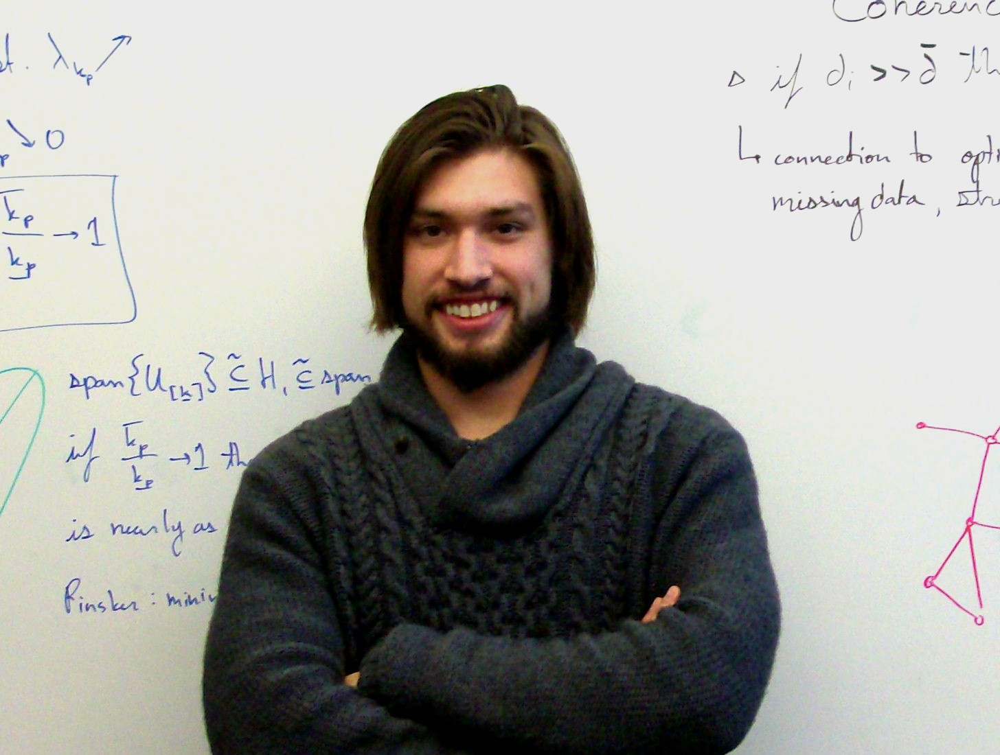

About me.
I am an assistant professor at UC Davis in the Statistics department. Before this I was a postdoctoral researcher and lecturer at UCSD in the Mathematics department. I hold a Ph.D in Machine Learning and Statistics from Carnegie Mellon University where my advisors were Aarti Singh and Alessandro Rinaldo. In my research, I develop and study computationally efficient statistical methodology for understanding complex phenomena in large datasets.

Email:
- Course email: prof.jsharpna@gmail.com (use this if you are a student in a course that I'm teaching)
- Davis email: jsharpna@ucdavis.edu (use this for all other business or research)
Recent Papers and Presentations
- Distributed Cartesian Power Graph Segmentation for Graphon Estimation, S. Wei, O.H. Madrid-Padilla, J. Sharpnack, May. 2018, (ArXiV preprint)
- Fused Density Estimation: Theory and Methods, R. Bassett, J. Sharpnack, May. 2018, (ArXiV preprint)
- Learning Patterns for Detection with Multiscale Scan Statistics, J. Sharpnack, Jan. 2018, accepted to COLT 2018, (ArXiV preprint, Presentation)
- Estimating Graphlet Statistics via Lifting, K. Paramonov, J. Sharpnack, Jan. 2018, (ArXiV preprint)
- SQL-Rank: A Listwise Approach to Collaborative Ranking, L. Wu, C.J. Hsieh, J. Sharpnack, Jan. 2018, accepted to ICML 2018, (ArXiV preprint)
My CV
Teaching
- Stats 141B: Data & Web Technologies for Data Analysis
- Stats 208: Statistical Machine Learning
Students
- Liwei Wu, Stats PhD Student (Co-advised)
- Xiaoyue Li, Stats PhD Student (Advised)
- Shitong Wei, Stats PhD Student (Advised)
- Qin Ding, Stats PhD Student (Co-advised)
- Lifeng Wei, Stats PhD Student (Co-advised)
- Dmitry Shemetov, Applied Math PhD Student (Advised)
Former Students
- Robert Bassett, Applied Math PhD (Committee/collaborator) - Assistant Professor at Naval Postgraduate School
- Kirill Paramonov, Applied Math PhD (Committee/collaborator) - Alphabet/Youtube data scientist
- Andrew Chin, Stats MS Student (Research assistant)
Professional Membership
- Institute of Mathematical Statistics
- Bernoulli Society
- IEEE, Signal Processing Society
Research
Graph Structured Signal Processing
(6 publications)Traditional signal processing techniques such as wavelet denoising and kernel smoothing, implicitly assume that the domain is homogeneous. Graph structure provides us with a more flexible framework for filters over heterogeneous media, social networks, or semantic information.
Scan Statistics over Networks
(6 publications)We develop novel methodology for detecting faint signals in sensor networks and images. In images we develop a precise asymptotic analysis for fast scanning tools based on convolutional feedforward neural nets. In general graphs, we look at approximation algorithms for the generalized likelihood ratio test.
Estimation in High-dimensions
(3 publications)Here we look at the fused lasso and trend filtering, which are locally adaptive non-linear filters that can outperform wavelet denoising. We also explore heteroscedasticity in high-dimensional models, for variance function estimation and locating master regulators in genomics data.
News 2018
- Mar: My paper Learning Patterns for Detection with Multiscale Scan Statistics, J. Sharpnack, Jan. 2018, has been accepted to COLT 2018 (Conference on Learning Theory), and I will be presenting this research in Stockholm; I presented this work at ITA 2018 (Information Theory and Applications).
- Apr: Our paper SQL-Rank: A Listwise Approach to Collaborative Ranking, L. Wu, C.J. Hsieh, J. Sharpnack, was accepted to ICML 2018 (International conference on Machine Learning), Liwei will be giving a poster presentation and a short advert in Stockholm.
- Apr: Robert Bassett has accepted a tenure track position at the Naval Postgraduate School in Monterey, CA. Robert has been working with me on fused density estimation and I am one of his committee members. Congrats Robert!
- May: Kirill Paramonov has accepted a data scientist job with Youtube in San Bruno, CA. Kirill and I have been working on graph analytics problems such as graphlet sampling. Congrats Kirill!
- June: Liwei Wu is doing an internship with Facebook this summer; Xiaoyue Li is doing internships with JD.com and Google.